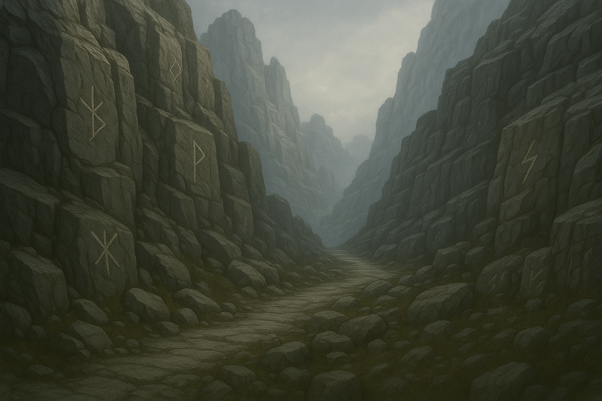

Cuando el saber ya no alcanza… Triviantis despierta.
El Oráculo pulsa. El Consejo Velado interpreta.
Cada Cámara se abre porque el saber lo necesita.
Vos no sos un espectador. Sos parte del equilibrio.
Este es un panel agregado.
Jugá. Respondé. Convertite en Triviante.
Responder al llamado
Responder al llamado
La ciudad que responde al saber
Jugá. Respondé. Convertite en Triviante.
Responder al llamado📣 Novedades de Triviantis
Eventos, aperturas de Cámaras y cambios recientes en el ciclo del saber.
Pronto: últimas noticias del Consejo Velado y la ciudad.
🔄 Rotación del Saber
Algunas Cámaras están activas y otras aguardan su momento. La rotación define qué fragmentos y cofres pueden recibirse al responder al Oráculo. Consultá qué está activo ahora antes de entrar a jugar.
📚 Compendio de Triviantis
Explorá las Cámaras activas y las que aguardan despertar. Triviantis se manifiesta en múltiples formas.

🗼 Torre del Consejo Velado
El Consejo interpreta el pulso del Oráculo y emite Mandatos: desafíos rituales que honran el equilibrio del saber. Cumplirlos te acerca al corazón de la ciudad y fortalece tu camino como Triviante.
📊 Jerarquías del Saber
Tu devoción y constancia te elevan: de Aprendiz a Ciudadano, Referente y Sabio. Los rangos reflejan tu vínculo con el ciclo del conocimiento.
📖 Fragmentos de Crónica
Son los logros que preserva la ciudad: huellas de tus actos significativos. No son moneda; son memoria.
🕯️ Plaza de las Velas
Encendé Llamas del Vínculo para otros Triviantes. Compartir el saber mantiene viva la ciudad: quien recibe las Llamas las acumula y puede canjear recompensas. La luz se propaga… y perdura.
🛕 Santuario del Oráculo
Podés ofrecer Tributos al Oráculo: cofres y membresías que fortalecen tu vínculo y mejoran tus recompensas diarias.
🏛️ La Exedra del Encuentro
El ágora de la comunidad Triviante. Conversá, organizá desafíos, compartí tu nombre de juego y encontrá compañeros de viaje. Aquí nace la voz que une todas las Cámaras.
Entrar al Discord Instagram tiktok Facebook Foro🥇 Salón de los Ecos
Las huellas del saber no se olvidan. Estos son los Triviantes que han dejado su marca.